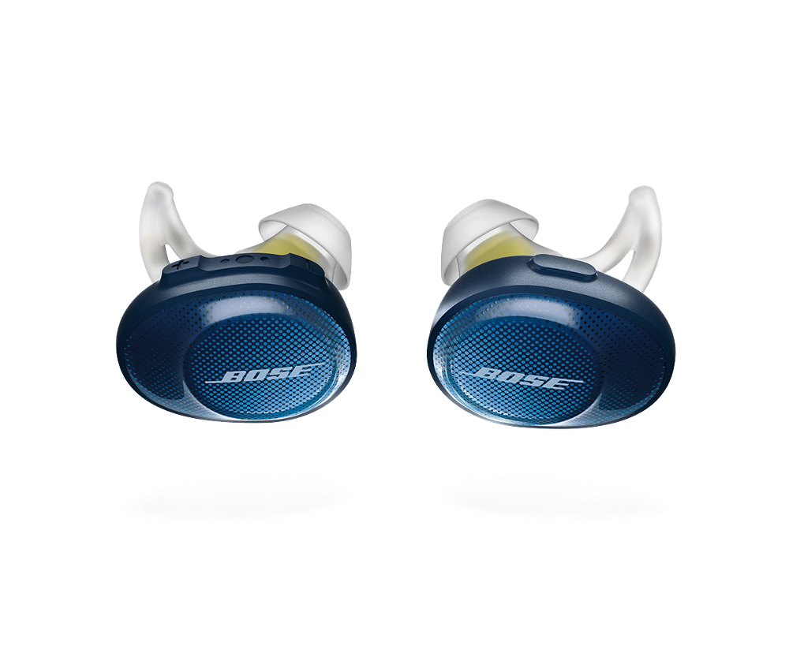

Categorias
Computadora, laptop, audifonos bluetooth, reloj inteligente, smartwatch, mouse, relojes, bocinas... y mas. Un post por cada uno.

Los conocidos como Auriculares de Chicharo, son un producto que deben su amplia difusion, de diferentes gamas, modelos y de tantas marcas a que son muy cómodos al andar, con aislante a los ruidos del exterior (no aislan igual que los Audifonos de Orejera, pero si aislan el ruido del entorno); su sonido por lo general de buena calidad, que hacen que escuchar musica o hablar por teléfono mientras te mueves o conduces se comodo.
Su control integrado en el 'chicharo', por simple, es una prestacion muy agradable, pues con un mismo boton se pueden gestionar playlist o llamadas. Ideales para contestar llamadas al caminar o manejar, sin sacar el telefono; las cargas suelen tener una duracion de unas horas; tienen buena calidad en el audio; algunos audifonos tienen la prestacion, en sus estuches, de servir como fuentes de carga, que pueden incluso cargar un poco un celular; y la vinculacion bluetooth es facil.
Lo que te debes considerar al elegirlos es: Si los usaras en movimiento (si manejas o haces deporte), si no escuchas nada mientras te mueves una buena opcion son los audifonos de Orejera o de Casco ya sea alambrico o inalambrico; tambien que la version de bluetooth de los audifonos sea compatible con tu celular; La calidad de sonido es muy parecida entre productos de la misma gama; la duracion de la pila es otro factor a considerar, en las descripciones suelen dar un aproximado de la durcion por carga, pero varia por el uso.
Computadora, laptop, audifonos bluetooth, reloj inteligente, smartwatch, mouse, relojes, bocinas... y mas. Un post por cada uno.